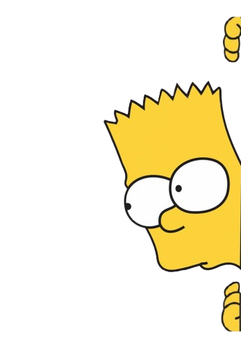
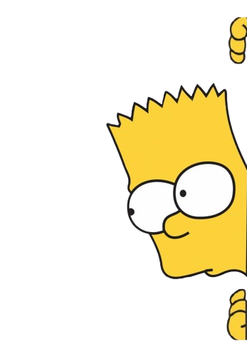
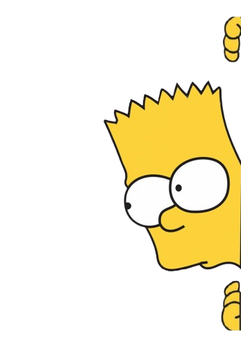

Bienvenido a
Los Simpsons App
Descubre quizzes, sonidos y diversión con tus personajes favoritos
Quiz Texto
Quiz Audio
Entrar
X
Quiz de Texto
Enviar Respuestas
Reiniciar Quiz
X
Quiz de Audio
Enviar Respuestas
Reiniciar Quiz
 
